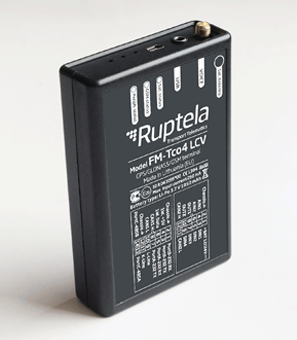

FM-Tco4 LCV La finalidad del FM-Tco4 LCV es el seguimiento y supervisión de vehículos comerciales ligeros, como las furgonetas y los vehículos de pasajeros. El dispositivo lee los datos LCV del ordenador a bordo (CANbus) y proporciona la ubicación del vehículo, la ruta, la velocidad, el kilometraje y mucho más. Normalmente resulta difícil supervisar el nivel de combustible y el consumo de los vehículos comerciales ligeros con sensores de nivel de combustible adicionales, por lo que FM-Tco4 LCV extrae la información sobre el nivel de combustible y el consumo directamente del ordenador a bordo del vehículo.

Funciones de FM-Tco4 LCV
• Supervisión del comportamiento del conductor (Eco-Drive)
• Lectura de datos del ordenador a bordo (CANbus LCV)
• Lectura de códigos de error del motor OBD II
• Identificación y registro del conductor
• Bloqueo de encendido a distancia
• Supervisión del combustible
• Zonas geográficas internas
• Función para evitar interferencias
• Funciones diversas mediante SMS
Además, FM-Tco4 LCV puede leer los códigos de error del motor OBD II, por lo que le permite detectar posibles fallos del motor antes de que el panel de instrumentos del vehículo se lo comunique. De este modo, podrá evitar las averías del vehículo durante la jornada laboral.
Se sabe que, con frecuencia, los vehículos comerciales ligeros son el objetivo de los ladrones y los empleados los utilizan para sus asuntos personales. Además del seguimiento continuo de sus ubicaciones, FM-Tco4 LCV ofrece soluciones de seguridad más avanzadas, como el bloqueo remoto del encendido del motor o el control de los conductores, uno de los dispositivos de identificación del conductor comercializados por Ruptela.
FM-Tco4 LCV permite gestionar y controlar mejor sus vehículos comerciales ligeros.
Estamos dispuestos a darle la mejor respuesta en la solución para su negocio. Teléfono: (511)610-0261